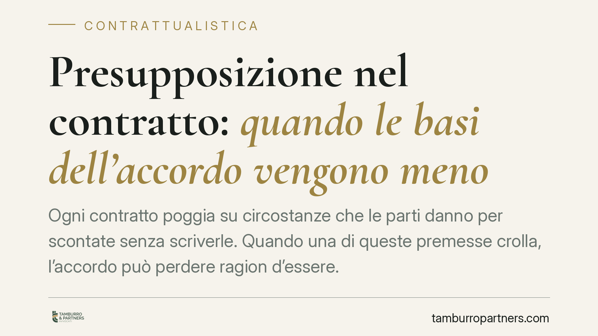

Presupposizione nel contratto: quando le basi dell'accordo vengono meno
Ogni contratto poggia su circostanze che le parti danno per scontate senza scriverle. Quando una di queste premesse crolla, l'accordo può perdere ragion d'essere. La presupposizione è l'istituto, di origine giurisprudenziale, che affronta proprio questo scenario. Vediamo quando opera, quali sono i suoi limiti e come muoversi in fase di stipula per ridurre i rischi.

Di cosa parliamo
La presupposizione è una situazione di fatto o di diritto che le parti, pur senza menzionarla nel testo, considerano come premessa comune e determinante del contratto. È il presupposto "non detto" ma condiviso: se viene meno, l'assetto di interessi che i contraenti avevano in mente non ha più senso.
L'esempio classico è quello di chi affitta un balcone o una finestra per assistere a una manifestazione pubblica. Se l'evento viene annullato, il contratto formalmente regge, ma la ragione stessa per cui è stato concluso è svanita. Nessuna clausola lo dice: era un dato che entrambe le parti presupponevano.
Inquadramento normativo
La presupposizione non ha una disciplina espressa nel codice civile. È un istituto costruito dalla giurisprudenza a partire dai principi generali sulla causa del contratto (art. 1325 e 1418 c.c.), sulla buona fede nell'esecuzione (art. 1375 c.c.) e sull'interpretazione secondo comune intenzione delle parti (art. 1362 c.c.).
La Corte di Cassazione ne ha delineato i confini in numerose pronunce. Perché ricorra la presupposizione devono coesistere alcuni elementi: la premessa deve essere comune a entrambe le parti, deve essere stata determinante del consenso, deve riguardare una circostanza obiettiva e indipendente dalla volontà dei contraenti, e il suo venir meno non deve dipendere dal comportamento di chi la invoca.
Sul piano dei rimedi, la giurisprudenza è oscillante ma prevalentemente orienta verso la risoluzione o il recesso del contratto, non verso la nullità. La differenza è rilevante: la nullità colpisce un vizio genetico, presente sin dall'origine; la risoluzione presuppone invece un contratto valido che poi diventa privo di funzione a causa di un evento sopravvenuto.
Presupposizione, condizione ed errore: non confondiamoli
La presupposizione va tenuta distinta da istituti vicini.
Nella condizione (art. 1353 c.c.) l'evento futuro e incerto è dedotto espressamente nel contratto: le parti lo scrivono. Nella presupposizione, al contrario, la premessa resta implicita.
Nell'errore (art. 1428 e seguenti c.c.) il vizio riguarda una falsa rappresentazione della realtà da parte di un solo contraente al momento della stipula. La presupposizione, invece, è una premessa condivisa che di regola viene meno dopo la conclusione.
Questa distinzione non è teorica: da essa dipende il rimedio esperibile e i termini per farlo valere.
Implicazioni pratiche
Per chi conclude contratti, il messaggio è chiaro. Ciò che è determinante non va lasciato all'implicito. Affidarsi alla presupposizione significa rimettersi a una valutazione giudiziale incerta, che richiede di provare a posteriori quale fosse la premessa comune. È un onere probatorio tutt'altro che agevole.
Il rischio concreto è quello di trovarsi vincolati a un contratto svuotato del suo scopo, senza uno strumento contrattuale chiaro per scioglierlo. Oppure, sul fronte opposto, di vedersi contestare la validità di un accordo perfettamente vincolante sulla base di una presupposizione mai realmente condivisa.
La presupposizione resta un'ancora utile quando manca ogni previsione espressa, ma è una rete di sicurezza, non una strategia di redazione.
Cosa fare in concreto
- Esplicitate le premesse determinanti. Se un contratto ha senso solo in presenza di una certa circostanza, scrivetelo in premessa o in una clausola dedicata.
- Usate le condizioni contrattuali. Trasformate le premesse critiche in condizioni sospensive o risolutive (art. 1353 c.c.), definendone con precisione l'evento e gli effetti.
- Prevedete clausole di recesso o rinegoziazione per gli scenari in cui il contesto di fatto muta in modo rilevante.
- Documentate la fase delle trattative. Corrispondenza e verbali possono provare quale premessa fosse effettivamente comune, se un domani serve invocare la presupposizione.
- Verificate i termini prima di agire. Il rimedio esperibile — risoluzione, recesso, altro — incide sui tempi e sulle modalità: consigliamo un'analisi preventiva del caso specifico.
In sintesi
La presupposizione tutela chi si trova con un contratto privo di scopo per il venir meno di una premessa comune. Ma è un rimedio dai contorni incerti, ricostruito caso per caso dai giudici. La via più solida resta la redazione accurata: mettere nero su bianco ciò che conta davvero.
---
*Contributo informativo a cura di Tamburro & Partners - Avv. Giuseppe Tamburro. Non costituisce parere legale.*
Ogni contratto ha il suo equilibrio.
Se vuoi una revisione delle clausole o una redazione su misura, scrivi allo studio. Ti rispondiamo entro un giorno lavorativo.